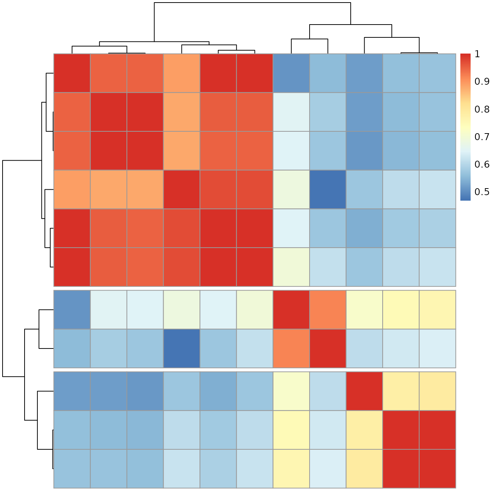
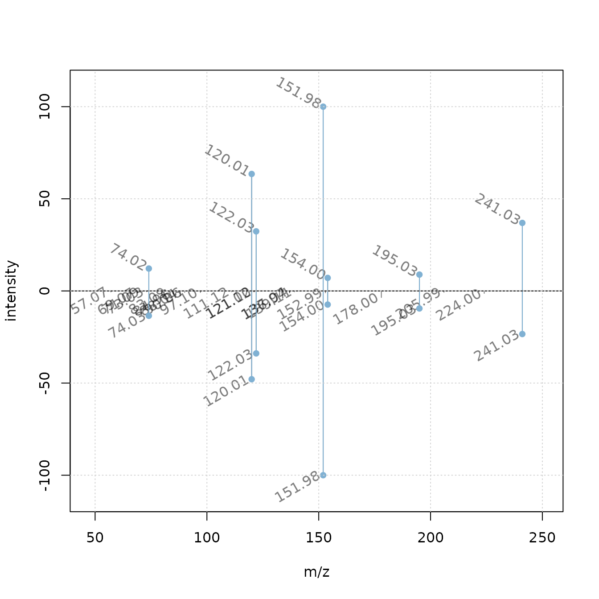
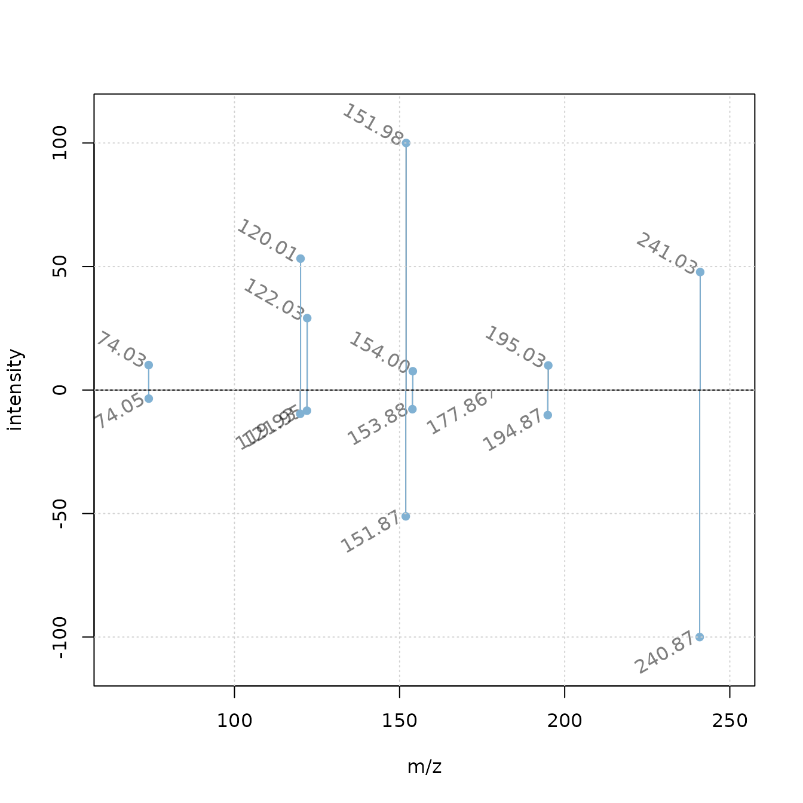

EuroBioC2020: Seamless Integration of Mass Spectrometry Data from Different Sources with the Spectra Package
Johannes Rainer1, Michael Witting2, Sebastian Gibb3, Laurent Gatto4
Source:vignettes/EuroBioc2020-Spectra-backends.Rmd
EuroBioc2020-Spectra-backends.RmdLast modified: 2020-12-09 15:37:36
Compiled: Wed Dec 9 15:45:25 2020
Note: this document is used for the online workshop. A version with more descriptive text is available here.
Introduction
- Describe the concept of backends to store/represent mass spectrometry (MS) data in the
Spectrapackage. - Use case: match experimental MS2 spectra against reference spectra from a public spectra database:
- import MS data from mzML files
- perform some data manipulations on this data
- match spectra against the MassBank
- export spectra in MGF format.
LC-MS/MS in a nutshell

LC-MS setup
Mass spectrometry (MS) instruments measure mass-to-charge ratios (m/z) of ions.
Most compounds are not charged, they need to be ionized first (with e.g. electro spray ionization (ESI).
MS is usually combined with another separation technique, such as liquid chromatography (LC). This adds another dimension: retention time (rt).
With LC-MS we measure features characterized by m/z and retention time - we still don’t know what molecule was actually measured.
Create in addition fragment (MS/MS) spectra from the ions to get some information about their structure.

CID-based fragmentation
- Commonly used method: collision induced dissociation (CID). In a collision chamber filled with e.g. N2, ions get fragmented, a spectrum of these fragments is recorded.
- Matching fragment spectra from an ion against a reference helps identifying the compound.
Analysing MS data with Spectra
The
Spectrapackage implements a clear separation of user functionality from code to provide, store and read mass spectrometry data.This represents an extension to the in-memory and on-disk data modes already in the MSnbase (Gatto, Gibb, and Rainer 2020).

Spectra: separation into user functionality and data representation
Enables analysis of very large MS data sets: backends that import the data only on demand.
Below we import the MS data from mzML files containing MSn data of a mix of 8 standard compounds.
MS2 data was generated by data dependent acquisition using two different collision energies.
We use the
MsBackendMzRbackend which supports data import from most common raw MS file formats:
library(Spectra)
fls <- dir(system.file("mzML", package = "SpectraTutorials"),
full.names = TRUE)
sps_all <- Spectra(fls, backend = MsBackendMzR())sps_allis now aSpectraobject:data.frame-like representation with columns being spectra variables and rows individual spectra.Spectra variables can be accessed via
$or using the dedicates access function (preferred way).Use
spectraVariablesto list all available spectra variables:
spectraVariables(sps_all)## [1] "msLevel" "rtime"
## [3] "acquisitionNum" "scanIndex"
## [5] "dataStorage" "dataOrigin"
## [7] "centroided" "smoothed"
## [9] "polarity" "precScanNum"
## [11] "precursorMz" "precursorIntensity"
## [13] "precursorCharge" "collisionEnergy"
## [15] "isolationWindowLowerMz" "isolationWindowTargetMz"
## [17] "isolationWindowUpperMz" "peaksCount"
## [19] "totIonCurrent" "basePeakMZ"
## [21] "basePeakIntensity" "ionisationEnergy"
## [23] "lowMZ" "highMZ"
## [25] "mergedScan" "mergedResultScanNum"
## [27] "mergedResultStartScanNum" "mergedResultEndScanNum"
## [29] "injectionTime" "filterString"
## [31] "spectrumId" "ionMobilityDriftTime"
## [33] "scanWindowLowerLimit" "scanWindowUpperLimit"- Access retention times of the first spectra:
head(sps_all$rtime)## [1] 0.273 0.570 0.873 1.183 1.491 1.798
head(rtime(sps_all))## [1] 0.273 0.570 0.873 1.183 1.491 1.798Our
Spectraobject uses aMsBackendMzRbackend to provide the data.Only general spectra information is kept in memory, MS peak data is retrieved on demand from the original data files. This ensures a small memory footprint.
print(object.size(sps_all), units = "MB")## 0.8 MbMsBackendDataFramebackend keeps all data in memory.setBackendallows to change backends - which does not affect the way we can use/work with the data.
sps_all <- setBackend(sps_all, MsBackendDataFrame())
print(object.size(sps_all), units = "MB")## 35.9 Mb- Next we subset our data to MS2 spectra with a precursor ion that matches the m/z of the [M+H]+ ion of the metabolite Cystine.
## MSn data (Spectra) with 11 spectra in a MsBackendDataFrame backend:
## msLevel rtime scanIndex
## <integer> <numeric> <integer>
## 1 2 209.936 673
## 2 2 220.072 714
## 3 2 231.604 734
## 4 2 211.481 687
## 5 2 224.634 718
## 6 2 236.326 731
## 7 2 215.089 761
## 8 2 225.739 781
## 9 2 240.020 804
## 10 2 212.161 771
## 11 2 224.662 801
## ... 33 more variables/columns.
## Processing:
## Switch backend from MsBackendMzR to MsBackendDataFrame [Wed Dec 9 15:45:31 2020]
## Filter: select spectra with a precursor m/z within [241.028689689, 241.033510311] [Wed Dec 9 15:45:31 2020]- In total 11 spectra matched our target precursor m/z.
Data processing and manipulation
- The
plotSpectrafunction can be used to visualize spectra.
plotSpectra(sps[1])Many very low abundance peaks present (noise?).
Filter the spectra removing all peaks with intensity below 5% of maximum peak.
Filter function: takes intensity values from each spectrum and returns
logicalwhether a peak should be kept or not.Use
filterIntensityto apply this function to the data.
low_int <- function(x, ...) {
x > max(x, na.rm = TRUE) * 0.05
}
sps <- filterIntensity(sps, intensity = low_int)
plotSpectra(sps[1])Low intensity peaks removed.
Next: normalize each spectrum to get intensities relative to the maximum peak intensity (set to a value of
100).Define a function that takes the peak matrix, normalizes the intensities and returns the modifier peak matrix.
Use
addProcessingto apply the normalization.addProcessingcan be used to apply any user provided function to the peak matrices.
norm_int <- function(x, ...) {
maxint <- max(x[, "intensity"], na.rm = TRUE)
x[, "intensity"] <- 100 * x[, "intensity"] / maxint
x
}
sps <- addProcessing(sps, norm_int)- Get the normalized intensities of the first spectrum:
intensity(sps)[[1]]## [1] 13.439402 93.631648 49.287979 100.000000 9.422415 6.581111 12.969807
## [8] 54.633224Note: data manipulation operations are not applied to the actual MS data, but cached in the lazy evaluation queue of the
Spectraobject.Data manipulation are applied on-the-fly each time m/z or intensity values are accessed. This enables the use of read-only data representations (e.g. raw data files, databases, …).
This mechanism enables us also to undo cached data manipulations with the
resetfunction:
## [1] 10 163 41 20 31 210Spectrum data comparison
Next we perform a pairwise comparison of the spectra.
-
Spectra comparison involves:
- matching of peaks from the compared spectra
- similarity calculation based on intensities of the matched peaks.
With
ppm = 20peaks with a difference in m/z smaller than 20ppm are considered matching.
cormat <- compareSpectra(sps, ppm = 20)compareSpectraallows to specify a mapping function withMAPFUN(defaults tojoinPeaksand a similarity calculation function withFUN(defaults tondotproduct).The pairwise spectra similarities are represented with the heatmap below.

The 11 spectra group into 3 clusters related to the collision energy used for the fragmentation.
We reduce our dataset to the cluster with the spectra generated with a collision energy of 20eV.
## $`1`
## [1] "HighIS_Mix06_CE20_POS.mzML" "HighIS_Mix06_CE20_POS.mzML"
## [3] "HighIS_Mix06_CE20_POS.mzML" "QC_HighIS_Mix06_CE20_POS.mzML"
## [5] "QC_HighIS_Mix06_CE20_POS.mzML" "QC_HighIS_Mix06_CE20_POS.mzML"
##
## $`2`
## [1] "HighIS_Mix06_CE30_POS.mzML" "HighIS_Mix06_CE30_POS.mzML"
## [3] "QC_HighIS_Mix06_CE30_POS.mzML"
##
## $`3`
## [1] "HighIS_Mix06_CE30_POS.mzML" "QC_HighIS_Mix06_CE30_POS.mzML"Matching against MassBank
Although the precursor m/z matches the m/z of Cystine, we can not exclude that they might not be from another ion/compound.
First step of annotation process: matching experimental spectra against public (or in-house) spectral library.
-
Many public spectral libraries for small molecules exist:
Data access to these resources is not standardized.
-
MsBackendMassbankpackage:Spectrabackends for MassBank data:-
MsBackendMassbank: data import/export from/to files in MassBank format. -
MsBackendMassbankSql: direct access to MassBank database.
-
Below we load the
MsBackendMassbankpackage and connect to a local installation of the MassBank MySQL database (release 2020.11, provided within the docker image).
library(RMariaDB)
library(MsBackendMassbank)
con <- dbConnect(MariaDB(), user = "massbank", dbname = "MassBank",
host = "localhost")- Create a
Spectraobject with aMsBackendMassbankSqlbackend to access all the data in MassBank.
mbank <- Spectra(con, source = MsBackendMassbankSql())
mbank## MSn data (Spectra) with 88168 spectra in a MsBackendMassbankSql backend:
## msLevel precursorMz polarity
## <integer> <numeric> <integer>
## 1 2 269.11 1
## 2 2 242.08 0
## 3 2 119.09 1
## 4 2 330.06 1
## 5 NA NA 1
## 6 NA NA 1
## 7 2 584.42 1
## 8 2 380.24 1
## 9 2 584.42 1
## 10 2 568.00 1
## ... 33 more variables/columns.
## Use 'spectraVariables' to list all of them.-
mbankdoes only contain the primary keys of spectra from the database, memory size is thus (relatively) small.
print(object.size(mbank), units = "MB")## 6.1 MbAny operation on this
Spectraobject will load the requested data from the database on-the-fly.Before matching we subset
mbankto spectra with a peak matching the precursor m/z.
has_mz <- containsMz(mbank, mz = mz, ppm = 20)Note that, to improve performance, we could also load all the spectra data into memory by changing the backend with
setBackendto aMsBackendDataFrame.Calculate spectral similarity between experimental spectra and the 217 spectra from MassBank.
mbank_with_mz <- mbank[has_mz]
res <- compareSpectra(sps_ce20, mbank_with_mz, ppm = 20)
max(res)## [1] 0.9236822- Below we indentify the best matching spectrum and access its intensity values.
## NumericList of length 1
## [["PB000446"]] 50.369 88.328 45.922 37.428 ... 950.368 69.414 130.733 2338.193MassBank reports absolute intensities, for better visualization we need to normalize them the same way we did with our data.
We can not change the data in MassBank, but
Spectra’s lazy evaluation queue allows us to apply data manipulations.
mbank_with_mz <- addProcessing(mbank_with_mz, norm_int)- Compare the best matching spectra with a mirror plot.
## Specifying a function to draw peak labels
label_fun <- function(x) {
format(unlist(mz(x)), digits = 4)
}
plotSpectraMirror(sps_ce20[idx[1]], mbank_with_mz[idx[2]], tolerance = 0.2,
labels = label_fun, labelPos = 2, labelOffset = 0.2,
labelSrt = -30)
grid()
Nice match between experimental and reference spectrum.
Next we want to know from which compound the reference spectrum was created.
spectraVariables(mbank_with_mz)## [1] "msLevel" "rtime"
## [3] "acquisitionNum" "scanIndex"
## [5] "dataStorage" "dataOrigin"
## [7] "centroided" "smoothed"
## [9] "polarity" "precScanNum"
## [11] "precursorMz" "precursorIntensity"
## [13] "precursorCharge" "collisionEnergy"
## [15] "isolationWindowLowerMz" "isolationWindowTargetMz"
## [17] "isolationWindowUpperMz" "spectrum_id"
## [19] "spectrum_name" "date"
## [21] "authors" "license"
## [23] "copyright" "publication"
## [25] "splash" "compound_id"
## [27] "adduct" "ionization"
## [29] "ionization_voltage" "fragmentation_mode"
## [31] "collision_energy_text" "instrument"
## [33] "instrument_type" "precursor_mz_text"Various information on spectra available, but not on the actual compound.
MsBackendMassbankprovides methodcompoundsthat allows to retrieve compound annotations from a MassBank database.Subset the MassBank
Spectrato the best matching spectrum and retrieve annotation.
mbank_best_match <- mbank_with_mz[idx[2]]
mbank_cmpd <- compounds(mbank_best_match)
mbank_cmpd## DataFrame with 1 row and 10 columns
## compound_id formula exactmass smiles
## <integer> <character> <numeric> <character>
## 1 48048 C6H12N2O4S2 240.024 C(C(C(=O)O)N)SSCC(C(..
## inchi inchikey cas pubchem
## <character> <character> <character> <character>
## 1 InChI=1S/C6H12N2O4S2.. LEVWYRKDKASIDU-UHFFF.. NA CID:595
## synonym name
## <CharacterList> <character>
## 1 Cystine,2-amino-3-(2-amino-3.. CystineBest matching spectrum is in fact a MS2 spectrum of Cystine.
Add additional annotations to the experimental spectra (name, chemical formula and collision energy).
sps_ce20$hmdb_id <- mbank_cmpd$name
sps_ce20$formula <- mbank_cmpd$formula
sps_ce20$adduct <- mbank_best_match$adduct
sps_ce20$collisionEnergy <- 20- Note: adding additional annotations should be possible regardless of the used backend.
Data export
At last we want to export our spectra to a file in MGF format.
MsBackendMgfpackage: adds support for MGF file import/export.Export the data with the
exportfunction, define the output format with thebackendparameter.
library(MsBackendMgf)
export(sps_ce20, backend = MsBackendMgf(), file = "Cystine_ce20.mgf")Matching against HMDB
In addition to the MsBackendMassbank, which provides access to MassBank data, there is also the MsBackendHmdb package supporting spectral data from the public Human Metabolome Database (HMDB). This package does however not yet provide direct access to the HMDB database but, through the MsBackendHmdbXml backend, allows to import MS2 spectra files in HMDB format. These are provided by HMDB as individual xml files in a custom file format which are bundled (and can hence be downloaded) in a single archive.
To reproduce the following code it is expected (as detailed in the Installation section) that all xml files from HMDB are available in a folder data/hmdb_all_spectra. Below we identify all xml files containing the key word "ms_ms" in their file name and load them into a Spectra object using the MsBackendHmdbXml backend. Note that this import operation from the ~ 500,000 individual xml files takes up to ~ 2 hours to finish.
library(MsBackendHmdb)
fls <- dir("data/hmdb_all_spectra/", full.names = TRUE, pattern = "ms_ms")
hmdb <- Spectra(fls, source = MsBackendHmdbXml(), nonStop = TRUE)With this we have now a Spectra object containing all MS2 spectra from HMDB. Note that with the MsBackendHmdbXml all spectra data is kept in memory.
hmdb## MSn data (Spectra) with 458963 spectra in a MsBackendHmdbXml backend:
## msLevel rtime scanIndex
## <integer> <numeric> <integer>
## 1 2 NA NA
## 2 2 NA NA
## 3 2 NA NA
## 4 2 NA NA
## 5 2 NA NA
## ... ... ... ...
## 458959 2 NA NA
## 458960 2 NA NA
## 458961 2 NA NA
## 458962 2 NA NA
## 458963 2 NA NA
## ... 21 more variables/columns.Also here, to avoid comparing our experimental spectra against all these ~500,000 spectra, we first determine with the containsMz function which of the HMDB spectra contain a peak matching the m/z of our ion of interest. We have to use a rather large tolerance value (which defines the maximal acceptable absolute difference in m/z values) since some of the experimental spectra in HMDB seem to be recorded by not well calibrated instruments.
has_mz <- containsMz(hmdb, mz = mz, tolerance = 0.2)In total 46772 spectra contain a peak with the required m/z (+/- 0.2 Dalton) and we can proceed to calculate spectral similarities between our experimental spectra and this subset from HMDB.
hmdb_with_mz <- hmdb[has_mz]
res <- compareSpectra(sps_ce20, hmdb_with_mz, tolerance = 0.2)The highest similarity between our spectra and the spectra from HMDB is r max(res). Below we compare the two best matching spectra with a mirror plot, in the upper panel showing our experimental spectrum and in the lower panel the best matching MS2 spectrum from HMDB.
idx <- which(res == max(res), arr.ind = TRUE)
## Specifying a function to draw peak labels
label_fun <- function(x) {
format(unlist(mz(x)), digits = 4)
}
plotSpectraMirror(sps_ce20[idx[1]], hmdb_with_mz[idx[2]], tolerance = 0.2,
labels = label_fun, labelPos = 2, labelOffset = 0.2,
labelSrt = -30)
grid()
Our experimental spectrum seems to nicely match the reference MS2 in HMDB. Below we extract the compound identifier from the best matching HMDB spectrum (stored in a spectra variable called "compound_id")
hmdb_with_mz[idx[2]]$compound_id## [1] "HMDB0000192"In fact, the matching spectrum from HMDB is an experimental spectrum for L-Cystine.
Summary
Separation of user functionaltity from data storage: ensures flexibility and expandability of the
Spectrapackage.Different backends for different data sources or to enable analysis of very large data sets.
Lazy evaluation queue allows to perform data manipulations without changing the actual data.
User functionality is indepenend of the backend.
References
Gatto, Laurent, Sebastian Gibb, and Johannes Rainer. 2020. “MSnbase, Efficient and Elegant R-Based Processing and Visualization of Raw Mass Spectrometry Data.” Journal of Proteome Research, September. https://doi.org/10.1021/acs.jproteome.0c00313.
Institute for Biomedicine, Eurac Research, Bolzano, Italy; johannes.rainer@eurac.edu↩︎
Research Unit Analytical BioGeoChemistry, Helmholtz Zentrum München and Chair of Analytical Food Chemistry, TUM School or Life Sciences, Technical University of Munich, Germany↩︎
Department of Anaesthesiology and Intensive Care, University Medicine Greifswald, Germany↩︎
Computational Biology Unit, de Duve Institute, UCLouvain, Brussels, Belgium↩︎